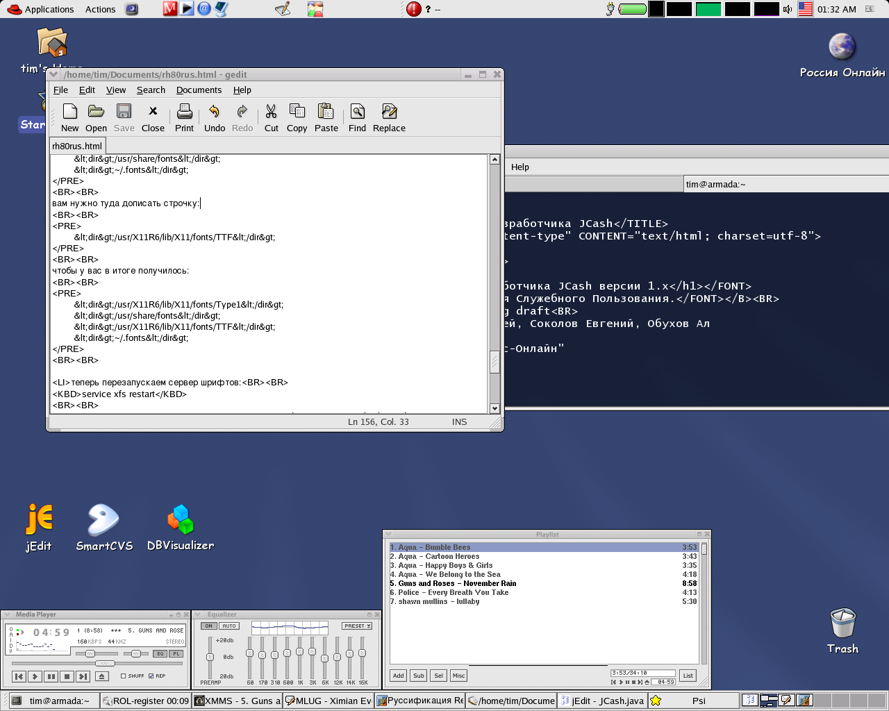

Размещено: Королев Тимофей, 2002-12-28
03:07:44.843877
Этот документ появился в результате того,
что к нам (LinuxShop.Ru) и ко мне в частности стало обращаться
большое количество народу с просьбой сказать, как же можно
русифицировать rh 8.0.
Русификация RedHat Linux 8.0Автор: Королев Тимофей
(tk AT linux-online.ru) специально для LinuxShop.Ru
© 2003 Linux-Online.Ru. При
перепечатке ссылка на оригинал обязательна!
Содержание1. Введение
2.
Русификация
3.
Альтернативные
подходы
4. Список
использованной литературы
Приложение
1. Все любят скриншоты
Этот документ появился в результате того, что к нам (LinuxShop.Ru) и ко мне в
частности стало обращаться большое количество народу с
просьбой сказать, как же можно русифицировать rh 8.0.
1.1. Политика
Осенью 2002 года RedHat выпустил в свет свой новый
дистрибутив. Революционным в нем было равнение на кодировку
UTF-8 (этакий Unicode начального уровня). Этот шаг был
воспринят весьма неоднозначно в кругах российских гуру. Многие
из них считают, что в Linux'e можно прекрасно жить и работать
в koi8-r или в cp1251. Эта статья для тех, кто так не считает
и по каким-либо причинам (это модно/можно открывать один и тот
же файл в MS Notepad и в GNOME gedit/это что-то новенькое/и
т.д.) хочет начать использовать эту кодировку.
Я не создатель дистрибутивов, а простой (довольно
ламернутый) пользователь Linux, который хочет просто удобно
работать и быть совместимым с внешним миром. Поэтому я могу
себе позволить быть сколь угодно критичным и высказывать
мнения, от которых обычный UNIX-гуру начнет метать искры
направо и налево. Честно говоря меня уже давно начал бесить
зоопарк в различных кодировках. Тебе присылают документ в
одной кодировке - надо перекодировать его в другую. Unicode
как раз и нужен для того, чтобы исключить такие ситуации, ибо
эта кодировка хоть и медленно, но таки становится стандартом
(не без помощи XML, кстати).
Перед тем, как читать документ дальше, давайте остановимся
на постулатах, на которых основывается этот документ:
1.
koi8-r/cp1251/cp866/translit - полный отстой для старых
перцев. Их (кодировки) надо "резать к чертовой матери, не
дожидаясь перетонитов!"
2. UTF-8 и Unicode вообще - рулят
адназначна.
3. (Опционально и на любителя) GNOME рулит!
Если вы согласны с 1 и 2 - читаем дальше.
1.2. Цели и задачи
Итак, что мне хотелось получить от Red Hat Linux
8.0:
Английские менюшки и сообщения во всех программах
Возможность печатать и читать во всех этих программах по
русски.
Работающий Ximian Evolution
Вот вообщем-то и все.
Не так уж много, не правда ли?
С чего начинается
Linux? С картинки в твоем букв... Нет, не то. Правильно, с
консоли!
Нужна ли обычному пользователю консоль? Правильно,
практически не нужна!
Нужен ли обычному пользователю
русский язык в консоли в тех редких случаях, когда консоль
нужна? - Правильно, не нужен на фиг!
Тем не менее, если
кому-то это очень нужно (вдруг X-ы свалились), его файл
/etc/sysconfig/i18n должен выглядеть
так:
LANG="en_US.UTF-8"
SUPPORTED="en_US.UTF-8:en_US:en:ru_RU.UTF-8:ru_RU:ru"
SYSFONT="latarcyrheb-sun16"
Прошу заметить: мы получили UTF-8-ную
консоль.
Для тех, кто в консоли хочет иметь koi8-r (рецепт
взят с linux.org.ru):
LANG="ru_RU.UTF-8"
SUPPORTED="en_US.UTF-8:en_US:en"
SYSFONT="koi8u_8x16"
SYSFONTACM="koi8r"
А теперь переходим к самому главному для
нас (пользователей) -X-Window.
2.1. Переключатель клавиатурыИтак, на нашем экране
появился красивый login manager (gdm). Вы выбираете язык -
Английский, вводите login и пароль. Вуаля! Загрузился
GNOME2.
Что дальше?
Я вижу два пути:
1-ый и
самый легкий: скачать с сайта http://gswitchit.sf.net/
программу GSwitchIt, которую разрабатывает наш
соотечественник, живущий сейчас в Ирландии - Сергей Удальцов.
Установить ее и, нажав правой кнопкой мыши на гномовскую
панель с менюшками и иконками, выбрать:
Add to Panel ->
Utility -> GSwithIt applet
И всего делов. Дальше
его можно сконфигурить как угодно, кликнув по апплету правой
кнопкой мыши.
2-ой путь: В вашем файле
/etc/X11/XF86Config в секции InputDevice должны
быть строчки: Option "XkbRules" "xfree86"
Option "XkbModel" "pc102"
Option "XkbLayout" "ru"
Option "XkbOptions" "grp:ctrl_shift_toggle,grp_led:scroll"
После этого вам необходимо перезагрузить
X-Window - для этого закройте все программы и нажмите
Ctrl+Alt+Backspace. Вас "выбросит" в login manager (gdm).
Теперь, когда вы наберете логин и пароль, у вас будет работать
переключение по правым Ctrl+Shift.
Лично я предпочитаю
первый путь, но это дело каждого, как ему поступать.
2.2. ШрифтыШрифты - это очень важная вещь, ибо,
работая, вы постоянно на них смотрите, поэтому очень важно,
чтобы со шрифтами все было в порядке. По умолчанию в Red Hat
Linux 8.0 идут Unicode-ные шрифты, в которых отсутствуют
русские буквы. Для того, чтобы это исправить, нужно:
скачать пакет с хорошими шрифтами http://mcmcc.bat.ru/RPMS/XFree86-75dpi-fonts-4.2.0-73.i386.rpm.
поставить его командой:
rpm -Uhv
XFree86-75dpi-fonts-4.2.0-73.i386.rpm
перезапустить сервер шрифтов командой:
service
xfs restart
удалить в домашнем каталоге файл
".fonts.cashe-1" командой:
rm -rf
$HOME/.fonts.cache-1
На данном этапе у нас уже
заработает почтовый клиент Ximian Evolution.
найти где-нибудь (на вашей машине, на машине вашего
приятеля, или просто директорию с микрософтовскими
TTF-шрифтами) директорию C:WINDOWSFONTS или что-то в этом духе
и скопировать оттуда все TTF-шрифты (файлы с расширением
*.ttf) в директорию /usr/X11R6/lib/X11/fonts/TTF.
в директории /usr/X11R6/lib/X11/fonts/TTF
выполнить
команды:
mkfontdir
mkfontdesc
mkfontscale
В файле /etc/fonts/fonts.conf у вас должно быть
записано что-то типа:
<dir>/usr/X11R6/lib/X11/fonts/Type1</dir>
<dir>/usr/share/fonts</dir>
<dir>~/.fonts</dir>
вам нужно туда дописать строчку:
<dir>/usr/X11R6/lib/X11/fonts/TTF</dir>
чтобы у вас в итоге получилось:
<dir>/usr/X11R6/lib/X11/fonts/Type1</dir>
<dir>/usr/share/fonts</dir>
<dir>/usr/X11R6/lib/X11/fonts/TTF</dir>
<dir>~/.fonts</dir>
теперь перезапускаем сервер шрифтов:
service
xfs restart
закрываем все программы и перезагружаем X-Window нажатием
Ctrl+Alt+Backspace
Ура! В нашей системе теперь красивые шрифты и, значит, в
ней будет приятно работать. Нажмите на иконку "Start Here"
-> "Preferences" -> "Font" и "поиграйтесь" со шрифтами.
Все приложения использующие gtk2 можно не трогать - они
теперь работают нормально. А вот приложения основанные на gtk1
- xchat, evolution и др. нужно потрогать. А именно в их
настройках, отвечающих за шрифты поставить любой понравившийся
шрифт и указать ему кодировку iso10646.
Несмотря на
прогрессивность кодировки UTF-8, некоторые сознательные и не
очень товарищи в силу своего то ли консерватизма, то ли
простого сисадминского приципа "работает - не трожь!"
предложили альтернативный вариант по установке в Red Hat Linux
8.0 локали "ru_RU.KOI8-R", что, с моей точки зрения, является
возвращением в каменный 20 век кодировочной неразберихи.
Понять их можно - в koi8-r без проблем работает куча старых
програм, но мы должны понимать, что с этим балластом нужно
порвать как можно скорее, тем более, что в UTF-8 живется очень
неплохо.
GSwitchIt - переключатель
раскладок клавиатуры.
http://mcmcc.bat.ru/ -
довольно интересный ресурс McMCC по неправильной (с моей точки
зрения) русификации (это не касается русификации X WIndow -
она выполнена правильно).
RH
Linux 8.0 Cyrillic Edition - целый дистрибутив с
опять-таки неправильной русификацией.
Давайте взглянем на то, что же у нас
получилось - мой рабочий стол:
Стол!!!
[Обсудить]
|
{kind=link}